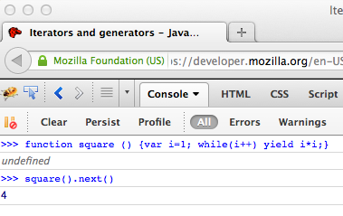

1963: Melvin Conway wrote a paper about coroutines
appeared in simula, modula2, python, lua, C (with macro)
Firefox (js1.7), ES6, v8, chrome, safari
This is not new stuff!
Routine is mainsubRoutine is a function: 1 entry, 1 or more exitcoRoutine is a generalisation of subRoutinefor-in loop_.each of underscore.jsArray.prototype.forEachvar iterator = ...;
for(let i of iterator) {
// do smart stuff with i
}What's so special about it that we need a new version of JS?
function * syntax to define a generatorfunction *generator () {
yield 1;
return 0;
};
var a = generator();
console.log(a.next()); //{value: 1; done: false}
console.log(a.next()); //{value: 0; done: true}
console.log(a.next()); //{done: true}function *generator (init) {
var a = yield init;
yield a;
throw "go away!";
};
var a = generator("hello");
console.log(a.next()); //{value: "hello"; done: false}
console.log(a.next("SydJS")); //{value: "SydJS"; done: true}
console.log(a.throw("u go away")); function *square() {
var i = 1;
while(i++)
yield i*i;
}
for(let sq of square()) {
if(sq > 10000) break;
console.log(sq);
}function Tree(left, label, right) {
this.left = left;
this.label = label;
this.right = right;
}
function* inorder(t) {
if (t) {
yield* inorder(t.left);
yield t.label;
yield* inorder(t.right);
}
}
for (let node of inorder(tree)) {
//...
}a.readFile(function (aValue) {
b.post(aValue, function (bValue) {
c.commit(function (cValue) {
keepGoing(aValue, bValue, cValue);
}
}
}aka pyramid of doom
a.readFile()
.then(b.post)
.then(c.commit)
.then(keepGoing)but it requires your callback to cooperate
with the Q.js library
Q.async(function*() {
var aValue = yield a.readFile();
var bValue = yield b.post(aValue);
var cValue = yield c.commit(bValue);
keepGoing(aValue, bValue, cValue);
})().done();suspend.js(86), genrun(24)
suspend(function*(resume) {
var aValue = yield a.readFile(resume);
var bValue = yield b.post(aValue, resume);
var cValue = yield c.commit(bValue, resume);
keepGoing(aValue, bValue, cValue);
})();suspend.js(86), genrun(24)
suspend(function*(resume) {
try {
var aValue = yield a.readFile(resume);
var bValue = yield b.post(aValue, resume);
var cValue = yield c.commit(bValue, resume);
keepGoing(aValue, bValue, cValue);
} catch (e) {
// ...
}
})();since FF2 - 2006
